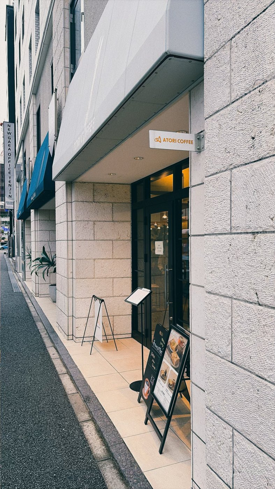

Basking Coffee ropponmatsu
📍 六本松


営業時間: 7:00~19:00
定休日: なし
決済方法: キャッシュレス決済のみ
情報確認日: 2026年10月
最新の情報は公式サイト等でご確認ください
訪問時期: 2026年10月
薬院にあるホテルのフロント横の、おしゃれなカフェです。テーブル、ソファ、カウンターと席の種類がそろっていて、一人でのんびり過ごしたい日にも、軽く作業したい日にも使いやすいお店です。
注文したのはバスクチーズケーキとアイスアメリカーノ。名物のバスクチーズケーキは、中がふわふわにとろける食感でした。
テーブル席やカウンター席は作業がしやすく、読書をするならソファ席がおすすめ。ヴィンテージものらしいソファは、座り心地がとても良かったです。
ホテルのチェックインやチェックアウトの時間と重なると、混み合うことがあります。支払いはキャッシュレス決済のみなので注意してください。お手洗いはホテルの1階にあります。